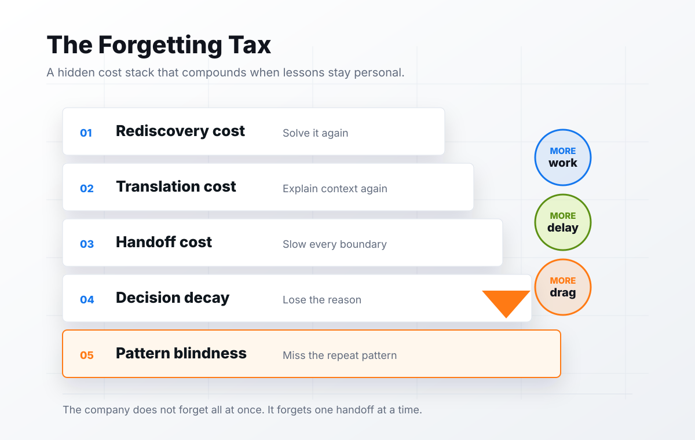

The Hidden Cost of Forgetting.
A chapter from The Intelligent Organization, the OTP manifesto for Organizational Intelligence Management.

Forgetting rarely appears on a P&L.
Every company pays the forgetting tax. Most never name it.
The tax nobody tracks
The cost is not only lost information.
It is lost velocity.
When a company forgets, it has to buy the same lesson twice. Sometimes it buys the lesson with time. Sometimes with payroll. Sometimes with customer trust.
Sometimes it buys it with a leader's attention.
The invoice is real. The accounting system just does not know what to call it.
The growth trap
More information does not always create more understanding.
More storage is not the same thing as memory.
Original framework
The Forgetting Tax has five parts.

Each one looks manageable alone. Together, they slow the organization.
Rediscovery cost
The company solves the same problem again.
A team reopens a question that was already answered. A manager rebuilds a playbook that already existed. A new hire repeats a mistake the last new hire made.
Nothing about this feels dramatic. It feels like work. That is why it survives.
Translation cost
The best people become the routing layer.
Senior people explain what should already be available. Operators translate between tools. Managers translate between teams. Leaders translate between memory and action.
The organization starts treating its best people like search engines with judgment.
Handoff cost
Every boundary asks for missing context.
If the system cannot say what the next person needs to know, the handoff slows down.
Decision decay
A decision has a half-life.
The decision may survive in a document. The reason behind it usually does not.
After enough time passes, the company can see what was decided but not why. When the result arrives later, nobody remembers the assumption the decision was testing.
Pattern blindness
The same issue returns in different clothes.
One quarter it looks like a sales problem. The next quarter it looks like a delivery problem. Then it looks like a staffing problem. Then it looks like a customer problem.
The organization treats each event as isolated because the memory layer never connected them.
The capable person problem
The most expensive knowledge is trapped knowledge.
It is not the knowledge nobody has. It is the knowledge someone has, but the company cannot use without them.
The board sees scale. The operator sees dependency. The person carrying the memory feels useful until they become trapped by it.
Executive audit
Find the memory bottlenecks.
- Which questions keep returning?
- Which people are repeatedly asked to explain how things work?
- Which decisions cannot be traced to outcomes?
- Which customer lessons never changed the operating model?
- Which meetings revisit the same issues?
The goal is not more documentation. The goal is less dependency on undocumented judgment.
What OTP changes
Personal intelligence has to become organizational intelligence.
Make the system behave differently next time.
Closing
The forgetting tax is optional.
Companies used to accept it because there was no practical way to make intelligence accountable across the business.
Now there is.
The leadership question is no longer whether the company has enough information.
It is whether the company can use what it already knows.
How much of your company only exists in someone else's head?